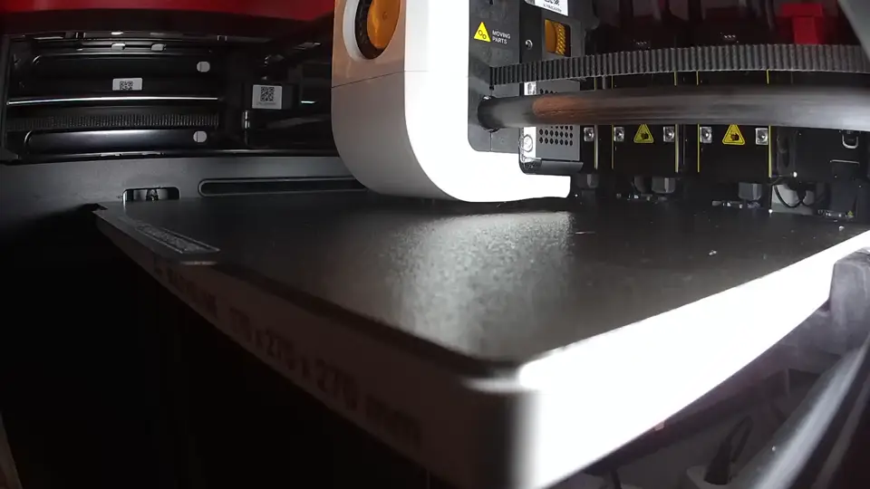
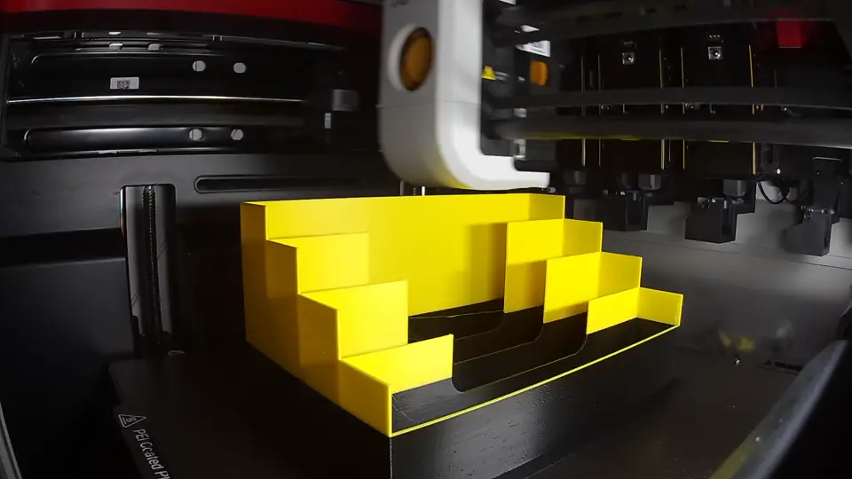

Problem
Die Post liegt lose herum, und man sieht nicht, was schon erledigt ist.
Lösung
- Vier gestufte Fächer für Briefe in DIN lang und C5
- Gerundete Griffmulden in den Zwischenwänden
- Vier vertiefte Etikettfelder an der Seite
- Ein Teil, 170 × 102 × 90 mm, ohne Stützen
KonstruktionDruckVideoMakerWorld
Erster Druck
Snapmaker U1, ABS, 0,2 mm, 3 Wände, Brim 8 mm: ca. 2 h 35 min und 83 g laut Druckdatei.
Noch offen: beschriften, im Einsatz filmen, Short. Danach gibt es die Druckdatei.
Der echte Druck
Home-Assistant-Zeitraffer vom Snapmaker U1. Mitten im Druck war das schwarze ABS leer, weiter ging es in Gelb.
Zeitraffer
Leeres Bett, fertige Box
Gleiche Druckerkamera, erstes und letztes Bild des Zeitraffers.


In 3D drehen
Ziehen zum Drehen, zwei Finger oder Mausrad zum Zoomen.
echtes Modell aus der Konstruktion · lädt erst beim Antippen
Druckbahnen Schicht für Schicht
Slice-Ansicht Briefbox
Alle Druckbahnen aus der echten Druckdatei, farbig nach Art. Mit dem Schichtregler sieht man, wie das Teil Schicht für Schicht entsteht. 450 Schichten, 83 g laut Druckdatei.
ca. 0,7 MB